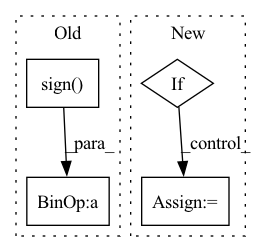

Pattern ID :8609
Before Change
else:
if dof == 1 and correction:
// Adjust `observed` according to Yates" correction for continuity.
observed = observed + 0.5 * np.sign( expected - observed)
chi2, p = power_divergence(observed, expected,
ddof=observed.size - 1 - dof, axis=None,
lambda_=lambda_)After Change
chi2 = 0.0
p = 1.0
else:
if dof == 1 and correction:
// Adjust `observed` according to Yates" correction for continuity.
// Magnitude of correction no bigger than difference; see gh-13875
diff = expected - observed
direction = np.sign(diff)
magnitude = np.minimum(0.5, np.abs(diff))
observed = observed + magnitude * direction
In pattern: SUPERPATTERN
Frequency: 4
Non-data size: 4
Instances Fragment ID: 29969721
Project Name: scipy/scipy
Commit Name: 769e4b58cbdfab5e41a41b0e0aa76d28cce2dce6
Time: 2021-04-22
Author: mhaberla@calpoly.edu
File Name: scipy/stats/contingency.py
M Class Name: AnonimousClass
N Class Name: AnonimousClass
M Method Name: chi2_contingency(3)
N Method Name: chi2_contingency(3)
M Parent Class:
N Parent Class:
M File Name: scipy/stats/contingency.py
N File Name: scipy/stats/contingency.py
M Start Line: 264
M End Line: 292
N Start Line: 264
N End Line: 296
Before Change
X = add_noise(_input, noise, batch=self.universal)
noise.data = (X - _input).data
if self.universal:
noise.data = (noise.sign() * noise.abs().mode(dim=0)).data
if "middle" in output:
self.output_info(_input=_input, noise=noise, mode="middle",After Change
iteration = self.iteration
if loss_fn is None:
loss_fn = self.loss_fn
if add_noise_fn is None:
add_noise_fn = add_noise
output = self.get_output(output)
// ----------------------------------------------------------------------------------------- // Fragment ID: 29969717
Project Name: ain-soph/trojanzoo
Commit Name: 9793ccb0297417da9d157d5102d477d603da930f
Time: 2020-07-23
Author: ain-soph@live.com
File Name: trojanzoo/optim/pgd.py
M Class Name: PGD
N Class Name: PGD
M Method Name: optimize(9)
N Method Name: optimize(8)
M Parent Class: Optimizer
N Parent Class: Optimizer
M File Name: trojanzoo/optim/pgd.py
N File Name: trojanzoo/optim/pgd.py
M Start Line: 70
M End Line: 101
N Start Line: 54
N End Line: 104
Before Change
// generate spikes
if neg_spikes:
activations = (
threshold_subtract(state.abs(), threshold, threshold * window)
* state.sign() .int()
)
else:
activations = threshold_subtract(state, threshold, threshold * window)After Change
for iCurrentTimeStep in range(time_steps):
// update neuron states (membrane potentials)
if self.membrane_reset:
// sum the previous state only where there were no spikes
state = syn_out[iCurrentTimeStep] + state * (activations == 0.)
else:
// subtract a number of membrane_subtract"s as there are spikes
state = syn_out[iCurrentTimeStep] + state - activations * self.membrane_subtract Fragment ID: 29969716
Project Name: synsense/sinabs
Commit Name: fbb4862d52af98b7c3bd73ee1f6ba14184b01c7d
Time: 2020-10-20
Author: martino.sorbaro@posteo.net
File Name: sinabs/layers/iaf_bptt.py
M Class Name: SpikingLayer
N Class Name: SpikingLayer
M Method Name: forward(2)
N Method Name: forward(2)
M Parent Class: nn.Module
N Parent Class: nn.Module
M File Name: sinabs/layers/iaf_bptt.py
N File Name: sinabs/layers/iaf_bptt.py
M Start Line: 143
M End Line: 161
N Start Line: 109
N End Line: 145
Before Change
self.y0 = y0.reshape(-1)
direction = ts[1] - ts[0]
sgn = torch.sign( direction)
self.ts = sgn * ts
self.func = lambda t, y: sgn * fcn(sgn * t, y.reshape(self.yshape), *params).reshape(-1)
self.dtype = y0.dtype
self.device = y0.device
After Change
self.y0 = y0.reshape(-1)
direction = ts[1] - ts[0]
if direction < 0:
self.ts = -ts
self.func = lambda t, y: -fcn(-t, y.reshape(self.yshape), *params).reshape(-1)
else:
self.ts = ts
self.func = lambda t, y: fcn(t, y.reshape(self.yshape), *params).reshape(-1)
self.dtype = y0.dtype
self.device = y0.device
n = torch.numel(y0)
Fragment ID: 29969718
Project Name: xitorch/xitorch
Commit Name: 1e02e71ab9e3aeaa1fa46453b766a14fb3712773
Time: 2021-12-30
Author: firman.kasim@gmail.com
File Name: xitorch/_impls/integrate/ivp/adaptive_rk.py
M Class Name: RKAdaptiveStepSolver
N Class Name: RKAdaptiveStepSolver
M Method Name: setup(5)
N Method Name: setup(5)
M Parent Class: object
N Parent Class: object
M File Name: xitorch/_impls/integrate/ivp/adaptive_rk.py
N File Name: xitorch/_impls/integrate/ivp/adaptive_rk.py
M Start Line: 43
M End Line: 46
N Start Line: 43
N End Line: 50